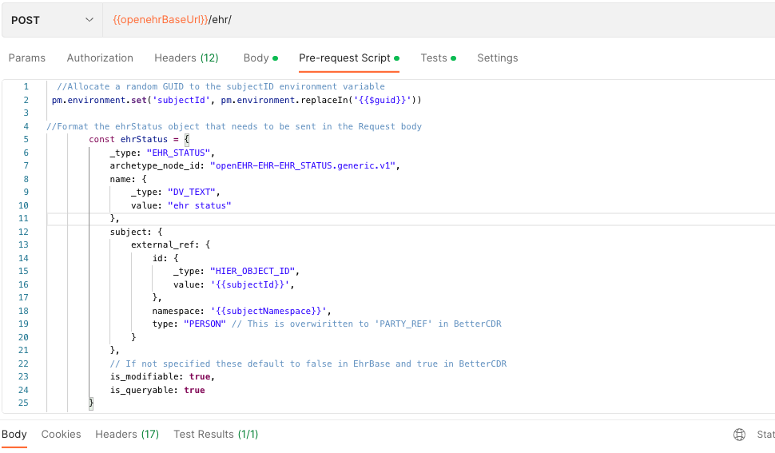

Creating a new patient 'EHR'
When a patient is registered with an openCDR, a 'subjectId (normally a real-word identifier like an National identifier e.g. NHS number, CHI number in the UK) or hospital MRI) is submitted by a POST /ehr | create EHR call. A top-level openEHR EHR object is then created in the CDR along with a unique internal ehrId identifier for that patient.
Depending on your local governance environment, you may/ may not be allowed to create new EHRs.
openCDR POST /ehr - Create an EHR from SubjectId/subjectNamespace example
Body 'parameters`
The subjectId and subjectNamespace parameters need to be injected into the body of the POST as below.
subjectId
This is the external identifier by which the patient is known within the CDR. It is normally a real-word identifier like an NHS number, CHI number or Hospital 'MRI' number, and will have been supplied to the CDR when the patients' EHR object was created in the datastore.
Example value : 9999999000
subjectNamespace
This is just a unique string used to identify the numbering scheme used for the 'subjectId'. It will commonly be some sort of URI such as ie-gov-hse-ihi and will have been agreed at national level.
Example value : ie-gov-hse-ihi
Warning
Note that there is a reported bug in Ehrbase that incorrectly disallows period characters . in subjectNamespace for now.

curl --location '{{ openehrBaseUrl }}/ehr' \
--header 'Accept: application/json' \
--header 'Content-Type: application/json' \
--header 'Prefer: return=representation' \
--header 'Authorization: {{ BasicAuthToken }}' \
--data '
{
"_type": "EHR_STATUS",
"archetype_node_id": "openEHR-EHR-EHR_STATUS.generic.v1",
"name": {
"_type": "DV_TEXT",
"value": "ehr status"
},
"subject": {
"external_ref": {
"id": {
_type: "HIER_OBJECT_ID",
value: '{{ subjectId }}',
},
"namespace": '{{ subjectNamespace }}',
type: "PERSON"
}
},
is_modifiable: true,
is_queryable: true
}'
```
#### Response
The CDR will give a `200` response code and this structure.
```json
{
"system_id": {
"_type": "HIER_OBJECT_ID",
"value": "83b25add-9919-4ea9-925a-34aca113a7ed"
},
"ehr_id": {
"_type": "HIER_OBJECT_ID",
"value": "e37e048c-3b02-4ebe-8ad2-5f6924e0c0c2"
},
"ehr_status": {
"_type": "EHR_STATUS",
"name": {
"_type": "DV_TEXT",
"value": "ehr status"
},
"subject": {
"_type": "PARTY_SELF",
"external_ref": {
"_type": "PARTY_REF",
"namespace": "ie_gov_hse_ihi",
"type": "PERSON",
"id": {
"_type": "HIER_OBJECT_ID",
"value": "0cfbf129-70f0-4130-906c-951793c0f353"
}
}
},
"archetype_node_id": "openEHR-EHR-EHR_STATUS.generic.v1",
"uid": {
"_type": "HIER_OBJECT_ID",
"value": "d13de4ea-ba28-49dc-a582-1d1e6ef383ae::freshehr.cloud.org::1"
},
"is_modifiable": true,
"is_queryable": true
},
"time_created": {
"_type": "DV_DATE_TIME",
"value": "2023-04-02T17:01:44.563Z"
}
}
The only datapoint you need to retrieve is ehr_id.
Hint
You may want to consider caching this for the session, so that it can be used for a number of subsequent calls.